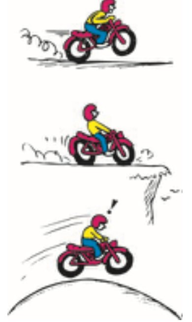
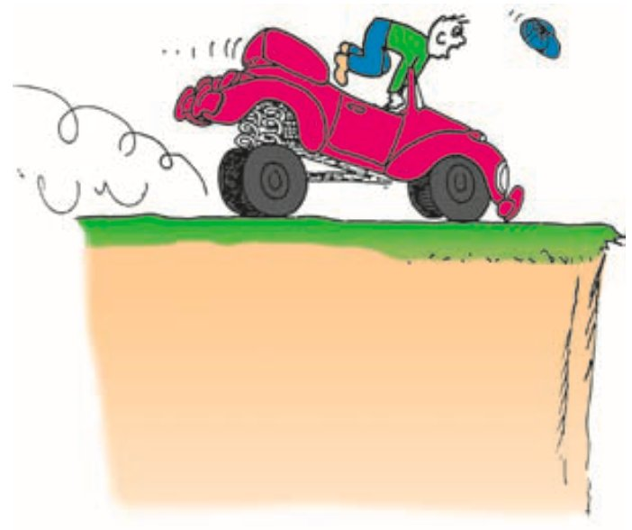
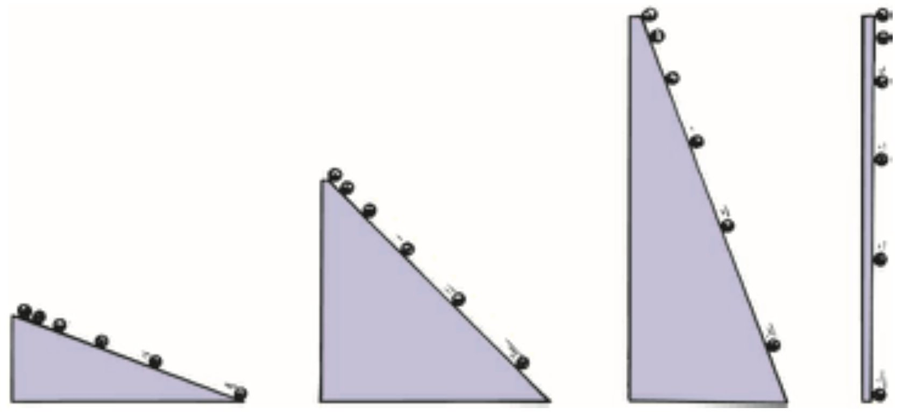
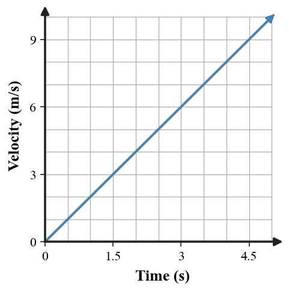

Acceleration
Mathematical idea: Acceleration compares a change in velocity with the time over which the change occurs.
You will calculate acceleration, classify changes in speed and direction, and connect data and a velocity–time graph to motion.
Learning Target
Students will explain acceleration as the rate at which velocity changes and identify acceleration from motion descriptions, data, and graphs.
I can statements
- I can calculate acceleration from change in velocity and time.
- I can explain that acceleration can involve speeding up, slowing down, or changing direction.
- I can identify positive, negative, or zero acceleration from a motion situation.
- I can interpret simple motion graphs and connect them to velocity or acceleration.
Vocabulary
These are words you will see in this section. Do not define them yet.
- acceleration
- change in velocity
- deceleration
- positive acceleration
- negative acceleration
- zero acceleration
- constant acceleration
Use the preview activity to decide which words you already know, recognize, or do not know yet. Watch for these words in bold when they are first introduced or defined in the reading.
Preview: Skim Before You Read
Directions
Before reading closely, skim the vocabulary list and the section. Look at titles, headings, bold words, pictures, captions, diagrams, tables, and formulas. Do not try to understand everything yet. Your job is to notice what already looks familiar and make predictions about what this section may explain.
Step 1 — Sort the vocabulary. Write each vocabulary word in the column that best matches what you know right now. You may move a word later.
| Know for sure | Recognize | Don’t know yet |
|---|---|---|
Step 2 — Skim the section. Record what catches your attention before you read closely.
| What I noticed | |
|---|---|
| What I predict | |
| What I wonder |
Content: Read, Look, Annotate, Apply
Directions
Read in short chunks. Annotate the prose and the figures together: underline evidence, circle or highlight bold vocabulary, label arrows or measured features, connect a sentence to an image, and write short questions or connections in the margins.
Reading 1: Velocity Can Change Quickly or Slowly
Acceleration is the rate at which velocity changes. The word rate matters: acceleration is not only how much the velocity changes, but how much it changes during a given time interval.
A change in velocity can come from a change in speed, a change in direction, or both. If a car goes from 30 km/h to 35 km/h in one second, its velocity changes by 5 km/h during that second. If the same change takes ten seconds, the acceleration is smaller because the change happens more slowly.
The textbook uses driving to make the idea concrete. The gas pedal can increase speed, the brakes can decrease speed, and the steering wheel can change direction. All three can change velocity, so all three can be connected to acceleration.

Image read: Compare the three motion situations. Annotate where speed, direction, or both could be changing. For each, write the evidence you used rather than guessing from the word “fast.”
Acceleration and velocity are different quantities. An object can have a large velocity and zero acceleration if its velocity remains constant, or a small velocity and a large acceleration if its velocity changes rapidly.
Stop and Discuss
- Why can an object moving at 400 km/h have zero acceleration?
- Two objects both change velocity by 6 m/s. One takes 2 s and the other takes 6 s. Which has the greater acceleration magnitude, and why?
First find the change in velocity:
$$\Delta v=v_f-v_i$$Then compare that change with the time interval:
$$a=\frac{\Delta v}{t}$$The sign depends on the chosen positive direction. A negative acceleration does not automatically mean “slowing down”; it means the acceleration points in the negative direction.
Example 1: Runner Speeds Up
A runner’s velocity changes from 4 m/s east to 16 m/s east in 6 s.
- Calculate $\Delta v$.
- Calculate the acceleration.
- Explain what the acceleration value says about how the velocity changes each second.
You Try It 1: Cart Leaves the Start
A cart’s velocity changes from 3 m/s to 9 m/s in 2 s in the positive direction.
- Calculate $\Delta v$.
- Calculate the acceleration.
- Classify the acceleration as positive, negative, or zero for the stated positive direction.
Reading 2: Speeding Up Is Only One Kind of Acceleration
When speed decreases, the source notes that the motion has a retarding acceleration, often called deceleration. In everyday speech, people often use this word for slowing down, but the physics definition of acceleration is broader than “speeding up.”
If we choose one direction as positive, a positive acceleration points in that positive direction, while a negative acceleration points in the opposite direction. These signs describe direction; they do not by themselves tell whether the object is speeding up or slowing down.
Zero acceleration means velocity is not changing. A race car moving at a constant velocity has zero acceleration even if its speed is very large.
Direction changes are also acceleration. A car moving around a circular path can keep the same speed while its direction changes every instant. Because velocity includes direction, the car’s velocity changes and the car accelerates.

Image read: Identify what changed in the vehicle’s velocity in this stopping situation. Add an arrow showing the original direction of motion and explain why a passenger senses the change.

Image read: Mark two points on the circular path where the car could have the same speed. Draw small direction arrows at those points and compare the velocities.
Stop and Discuss
- Explain why negative acceleration is not always the same as slowing down.
- Use the circular-path image to explain how an object can accelerate without changing its speed.
Example 2: Braking in the Positive Direction
East is defined as positive. A cyclist moving east changes velocity from +12 m/s to +4 m/s in 4 s.
- Calculate $\Delta v$.
- Calculate the acceleration.
- Explain how the sign and the speed change fit together.
You Try It 2: Turning at Constant Speed
A car moves around a curve at a steady 15 m/s.
- Does the speed change?
- Does the velocity change?
- Is the car accelerating? Justify using the definition of acceleration.
Reading 3: Constant Acceleration Leaves a Pattern
Galileo slowed accelerated motion by using inclined planes. The textbook explains that on a given incline, a rolling ball gained the same amount of speed during each successive second. That pattern is constant acceleration.
For example, if velocity values are 0, 2, 4, 6, 8, and 10 m/s at one-second intervals, the velocity changes by 2 m/s every second. The object is not moving at constant velocity; instead, its velocity is changing at a constant rate.
Steeper inclines produced greater accelerations. The source uses several slopes to show that the motion changes more quickly as the plane becomes steeper, with the vertical case connecting to free fall in the next section.

Image read: Compare the spacing of successive ball positions on the three inclines. Mark where the evidence suggests the speed is changing most quickly.
A velocity–time graph can show the same pattern. If equal time steps produce equal changes in velocity, the plotted points form a straight rising or falling trend. A horizontal velocity–time graph represents zero acceleration because velocity is constant.

Image read: Choose two one-second intervals on the graph. Compare the change in velocity in each interval and explain what that reveals about acceleration.
Stop and Discuss
- What pattern in a velocity table or velocity–time graph is evidence of constant acceleration?
- How does the inclined-plane image support the claim that steeper slopes can produce greater acceleration?
Example 3: Read a Velocity Pattern
A cart has velocities 0, 3, 6, 9, and 12 m/s at 0, 1, 2, 3, and 4 s.
- Determine the change in velocity during each one-second interval.
- Determine the acceleration.
- Explain whether the acceleration is constant and cite the data pattern.
You Try It 3: Zero or Nonzero Acceleration?
A velocity–time graph is horizontal at +8 m/s from 0 s to 5 s.
- What happens to velocity during the interval?
- What is the acceleration?
- Explain how the graph shape supports your conclusion.
Vocabulary: Define the Terms
You have now seen these words in the reading, images, and practice. Use this table to consolidate the physics meaning of each term.
| Vocabulary term | Definition |
|---|---|
| acceleration | The rate at which velocity changes with time. |
| change in velocity | The difference between final and initial velocity, $\Delta v=v_f-v_i$. |
| deceleration | A common term for acceleration associated with decreasing speed. |
| positive acceleration | Acceleration directed in the chosen positive direction. |
| negative acceleration | Acceleration directed opposite the chosen positive direction. |
| zero acceleration | A condition in which velocity does not change. |
| constant acceleration | Motion in which velocity changes by equal amounts during equal time intervals. |
Summary
- Acceleration measures how quickly velocity changes: $a=\frac{{\Delta v}}{{t}}$.
- Use $\Delta v=v_f-v_i$ before calculating acceleration.
- Acceleration can result from speeding up, slowing down, changing direction, or a combination.
- The sign of acceleration indicates direction relative to the chosen positive direction.
- Equal velocity changes during equal time intervals are evidence of constant acceleration.
Common Mistakes
| Mistake | Why it is tempting | Check instead |
|---|---|---|
| Calling any fast-moving object “high acceleration.” | Speed and acceleration are both connected to motion. | Ask whether velocity is changing, not whether velocity is large. |
| Treating negative acceleration as automatically slowing down. | The minus sign looks like “less.” | Compare the direction of velocity with the direction of acceleration. |
| Ignoring direction changes. | The speedometer can stay constant. | Remember that velocity includes direction. |
| Using final velocity instead of change in velocity in the formula. | The final value is easy to grab first. | Calculate $\Delta v=v_f-v_i$ before dividing by time. |
State the physics definition of acceleration.
A cart changes velocity from 2 m/s to 14 m/s in 4 s. Calculate its acceleration and explain the result in words.
What is one thing you learned in this section? Explain it in at least one complete sentence.
What is one thing from this section you still need to understand or practice more? Be specific.